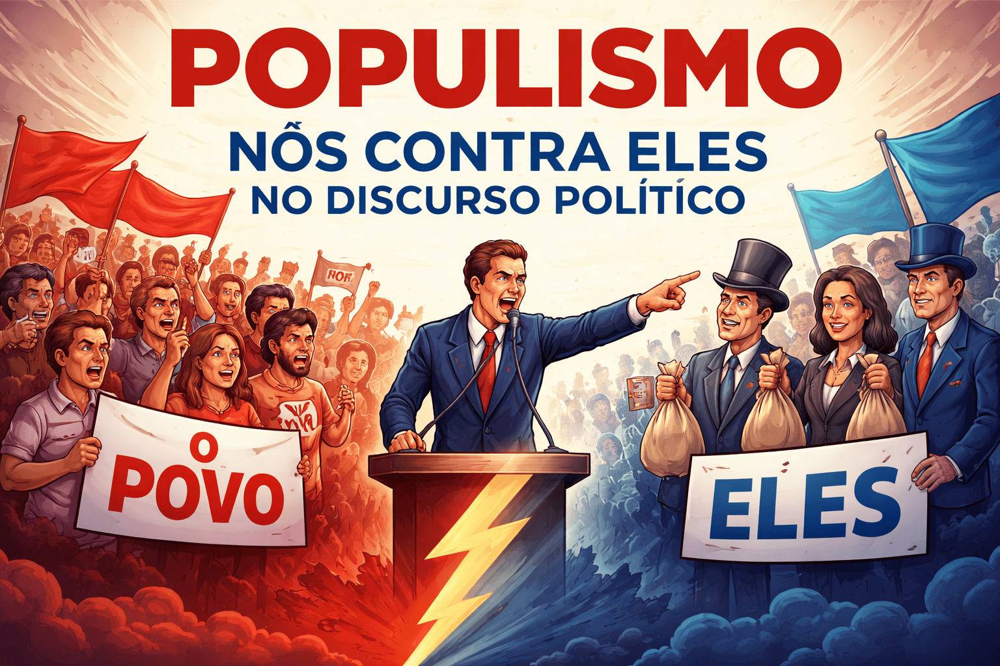

Populismo e a Construção do "Nós contra Eles" no Discurso Político
Introdução
O populismo constitui um fenômeno político amplamente debatido nas Ciências Sociais e na Ciência Política contemporânea. Embora existam diferentes abordagens teóricas para sua compreensão, muitos estudiosos convergem na ideia de que o populismo se caracteriza pela construção discursiva de uma divisão entre dois grupos antagônicos: o "povo" e as "elites". Nesse contexto, emerge uma narrativa baseada na oposição entre um grupo considerado legítimo e moralmente superior e outro identificado como responsável pelos problemas sociais, econômicos ou políticos.

A lógica do "nós contra eles" desempenha papel central na mobilização política populista, uma vez que promove a criação de identidades coletivas e fortalece o sentimento de pertencimento dos indivíduos a determinado grupo social ou político.
O conceito de populismo
Segundo Mudde (2004), o populismo pode ser compreendido como uma ideologia de baixa densidade que divide a sociedade em dois grupos homogêneos e antagônicos: o povo puro e a elite corrupta.
Observa-se que Mudde (2004, p. 543) define o populismo como uma ideologia que considera a sociedade separada em dois grupos homogêneos e antagônicos, o povo puro versus a elite corrupta
.
Essa definição evidencia que o populismo não depende necessariamente de uma orientação ideológica específica, podendo manifestar-se tanto em movimentos de direita quanto de esquerda.
Corroborando essa perspectiva, Müller (2016) argumenta que os líderes populistas reivindicam o monopólio da representação legítima do povo, desqualificando adversários políticos e instituições que não compartilham de suas posições. Trata-se de uma característica recorrente dos discursos populistas contemporâneos, que frequentemente apresentam divergências políticas como conflitos morais entre grupos supostamente incompatíveis.
A construção discursiva do "nós contra eles"
A formação de identidades coletivas constitui um dos elementos fundamentais da estratégia populista. De acordo com Laclau (2013), a construção do povo não ocorre de maneira espontânea, mas resulta de processos discursivos que articulam diferentes demandas sociais em torno de uma identidade comum.
A construção de um povo é a condição sine qua non para o funcionamento da democracia. Sem a produção de uma fronteira interna separando o "povo" de um poder considerado opressor, não existe possibilidade de emergência de uma vontade coletiva capaz de transformar a realidade social.
(LACLAU, 2013, p. 117).
Conforme as normas da ABNT, citações com mais de três linhas devem ser apresentadas em bloco destacado, com recuo da margem esquerda, fonte menor que a do texto principal e sem o uso de aspas.
A partir dessa perspectiva, observa-se que o populismo depende da criação de fronteiras simbólicas entre grupos sociais. Essas fronteiras não são necessariamente econômicas ou institucionais, podendo envolver aspectos culturais, religiosos, identitários ou nacionais.
O antagonismo político e a mobilização popular
A construção da oposição entre "nós" e "eles" favorece a mobilização política porque simplifica conflitos complexos e oferece explicações acessíveis para problemas sociais. Em vez de apresentar múltiplas causas para uma determinada crise, o discurso populista frequentemente atribui a responsabilidade a um grupo específico.
Segundo Müller (2016), essa lógica tende a reduzir o espaço para o pluralismo democrático, uma vez que os opositores deixam de ser percebidos como adversários legítimos e passam a ser apresentados como inimigos do povo.
De forma indireta, pode-se afirmar que o autor considera que o populismo produz uma compreensão moralizada da política, em que a disputa entre projetos de governo é substituída por uma divisão entre representantes legítimos e ilegítimos da sociedade (MÜLLER, 2016).
Essa dinâmica contribui para o fortalecimento da identificação coletiva dos apoiadores e para a ampliação do engajamento político, especialmente em contextos de crise institucional ou desconfiança em relação às elites governantes.
Considerações finais
O populismo representa um fenômeno complexo e multifacetado, mas a construção discursiva do antagonismo entre "nós" e "eles" permanece como uma de suas características centrais. A partir da análise de autores como Mudde, Laclau e Müller, verifica-se que a formação de identidades coletivas e a oposição entre povo e elite constituem elementos fundamentais para a compreensão dos discursos populistas.
Além de influenciar processos eleitorais e estratégias de mobilização política, essa lógica discursiva impacta diretamente o funcionamento das democracias contemporâneas, tornando-se objeto de crescente interesse acadêmico em diferentes áreas do conhecimento.
Referências
LACLAU, Ernesto. A razão populista. São Paulo: Três Estrelas, 2013.
MUDDE, Cas. The populist zeitgeist. Government and Opposition, v. 39, n. 4, p. 541-563, 2004.
MÜLLER, Jan-Werner. O que é populismo? São Paulo: Companhia das Letras, 2016.
Explore Outros Conteúdos
Continue seus estudos acessando outras seções do site Mestre Kira: